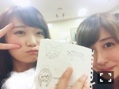
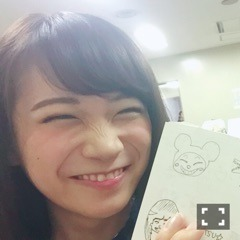

| 2016/08 07 Sun | 斎藤ちはる 名古屋終了〜(´>∀<｀)ゝ |
ちはるーむへようこそ(﹡ˆ ˆ﹡)
後ろで脚をクロスしてるのが
ポイント。
この時はゴロンとしながら
リオオリンピックみてました\( ˆoˆ )/
スポーツ観戦が趣味な私からしたら
オリンピックは欠かせません！
-------------------------♡
今日、全国ツアー
名古屋公演2公演が終わりました〜！
とても暑い中来てくれた皆さん！
行けないけど応援してくれていた皆さん！
本当にありがとうございましたm(_ _)m
皆さんのおかげで
頑張れています。
人ってこんなに汗をかけるんだ！
という考えに至るほど
汗をかきました。
満杯の会場の凄い熱気が
私たちを熱くしました♪！
楽しかったな(﹡ˆ ˆ﹡)
この調子で、神宮まで
突っ走っていきたいと思います！！
-------------------------♡
ライブの休憩中、
真夏の座っていた机を見ると
落書きが書いたメモがありました！

若月と色々書きあいっこしていたみたい。
その中に気になる絵が！

ニャンちゅう。
ニャンちゅう。。
本当似てる( ◦˙ ˙◦ )
真夏はよく、
「ちーちゃん♡ちゅ♡」
と言ってくるので邪険にしてます。
真夏には氷対応。
-------------------------♡
ちは"食"散歩〜♪
今日は、私達が
名古屋に来た際には
ほぼ必ず食べる、
いなり寿司を紹介します！
豆狸さん\( ˆoˆ )/
豆狸さんのいなり寿司が来ると
メンバーがどこからともなく
急に集まりだします。
異様な光景！！
それほどメンバー人気が高く、
いつも美味しい美味しいって言って
みんなで食べてます\( ˆoˆ )/
私は豆狸いなりと、わさびいなりが好き！
皆さんも是非(﹡ˆ ˆ﹡)
-------------------------♡
♬ ChihaMusic
「アイネクライネ」米津玄師さん
妹が流してて、この曲いい！
と、教えてもらいました。
声が優しくて聞きやすくて好きです。
歌詞も素敵〜
最近音楽を聴くときは
最初にこの曲を聞きます。
お気に入り！
ライブって、どんな髪型がいいんだろう？
っていつも悩むんだよね(> <)。。
どんな髪型がいいですか？？
教えてください\( ˆoˆ )/
おやすみ！
斎藤ちはる